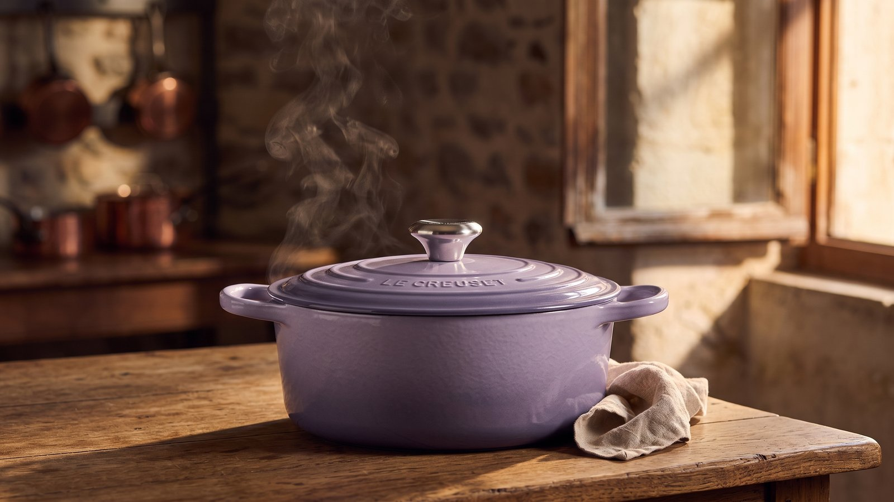
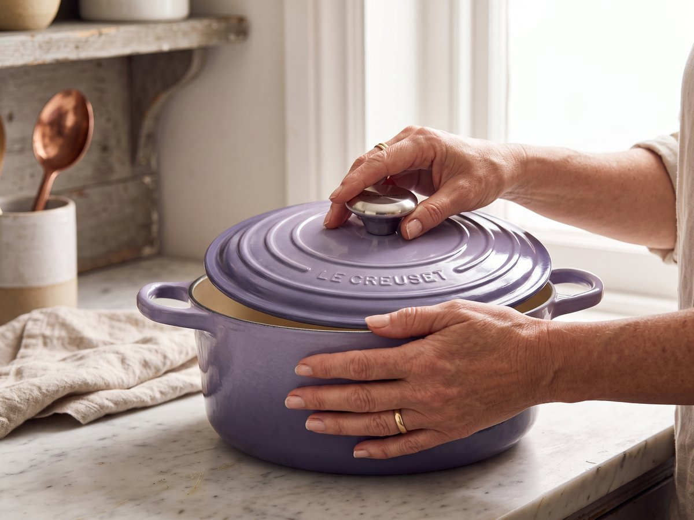
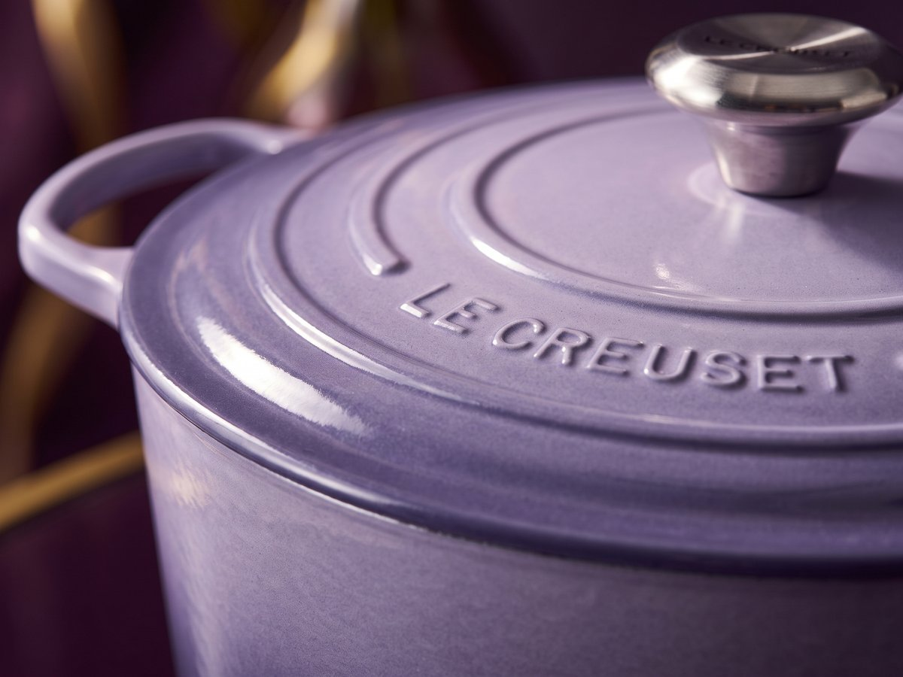
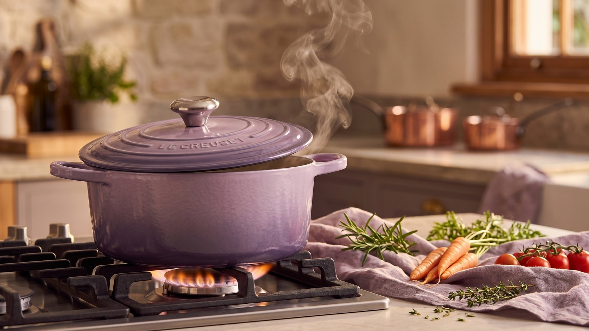
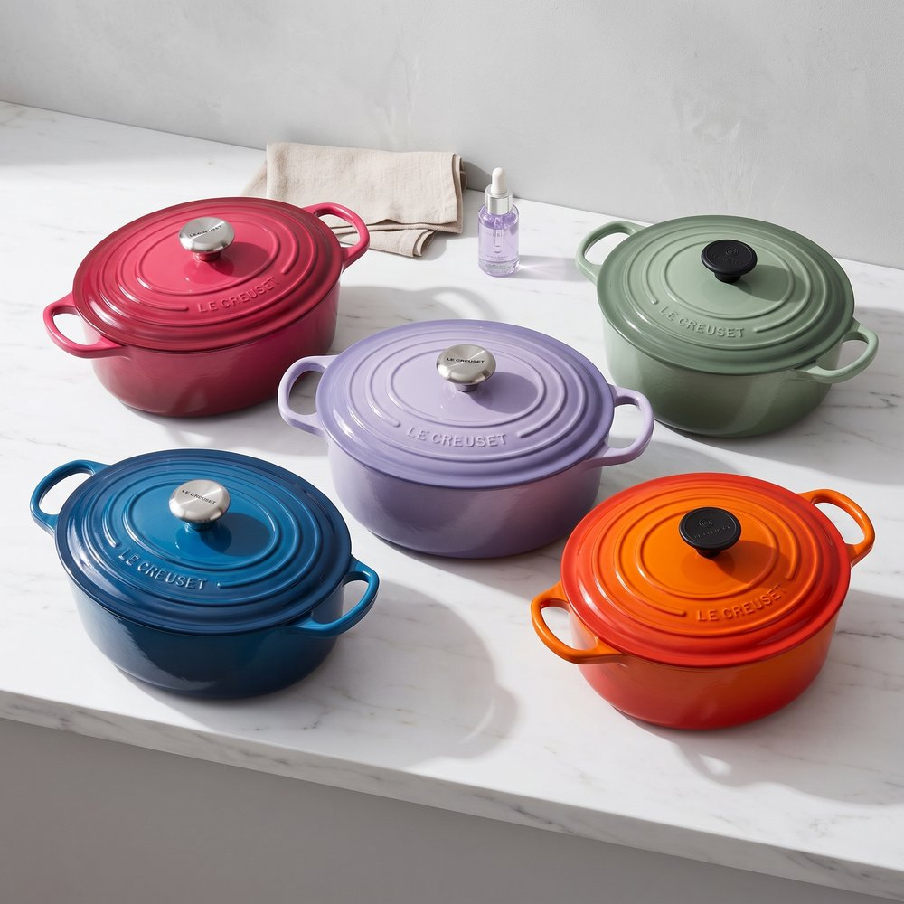
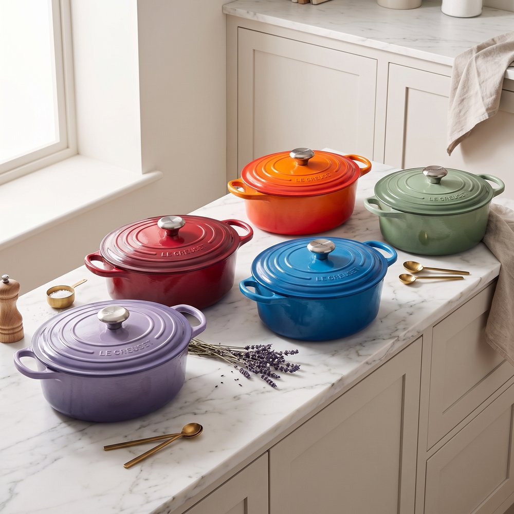
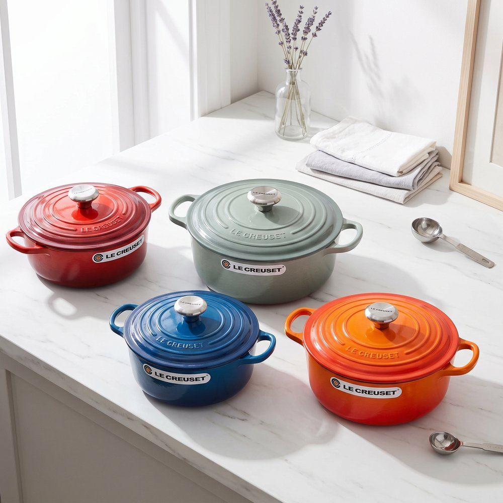
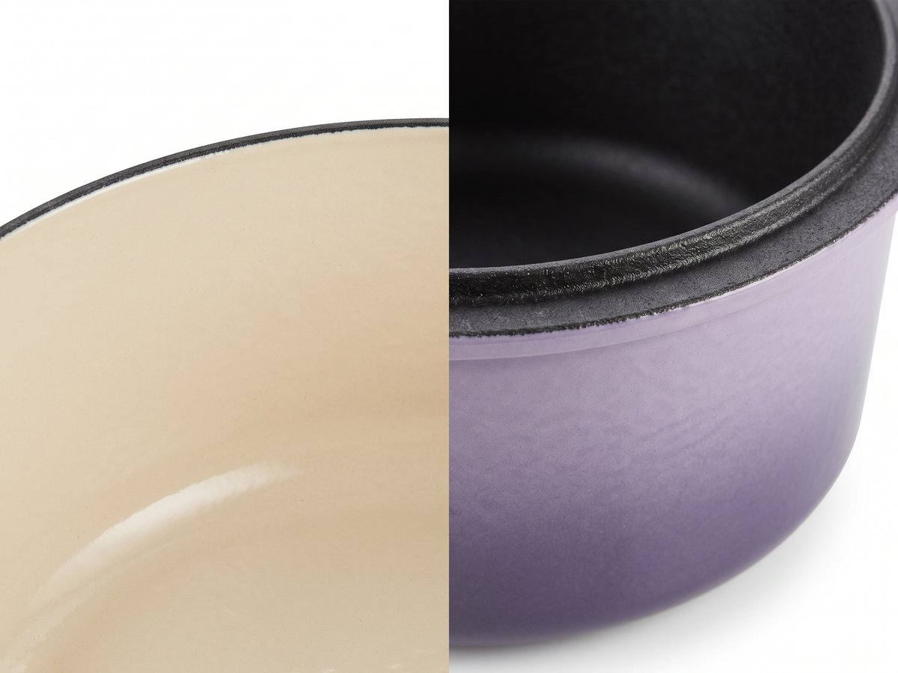
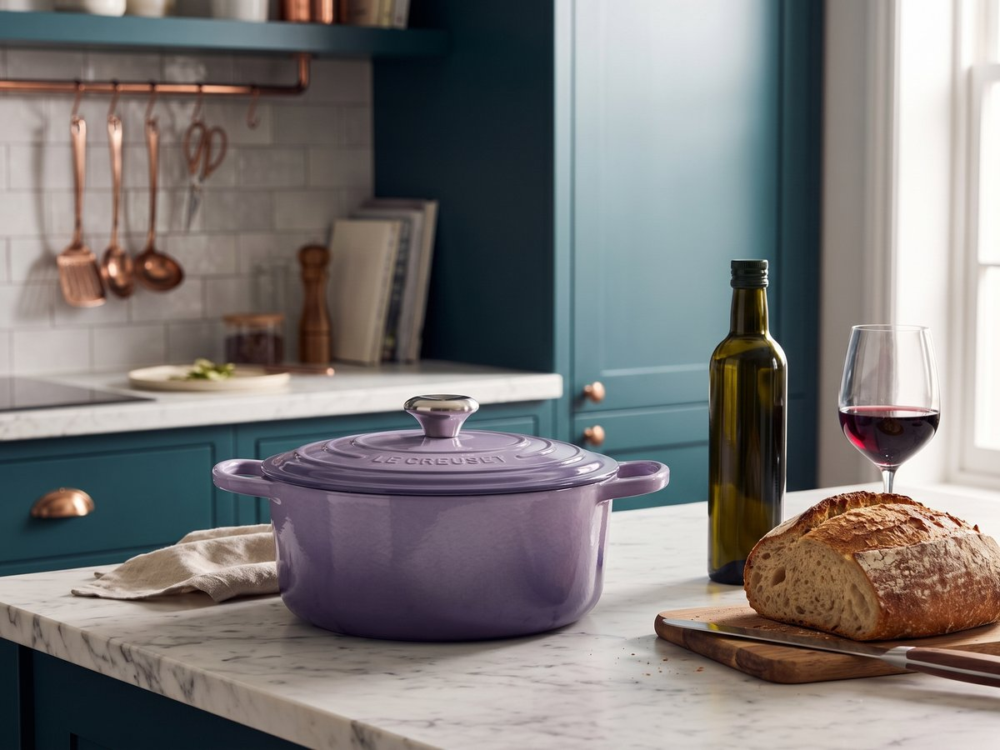
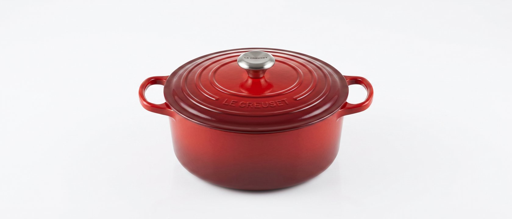

Hrnec, který se nekupuje. Pořizuje.
Vaření má svůj rytmus a Le Creuset Signature mu dává pevný základ. Smaltovaná litina se špičkovým vedením a udržením tepla pracuje rovnoměrně, takže pomalé vaření získává klid, přesnost i hloubku chuti.


Řemeslná výroba z francouzské litiny
Každý hrnec je individuálně vyráběn francouzskými řemeslníky. Precizní řemeslná výroba se projeví v každém detailu, zatímco široká oušková madla zajišťují pohodlnou manipulaci.

Příliš krásný na to, aby byl schovaný
Le Creuset Signature vyniká přes 20 barevnými variantami, takže si snadno vyberete odstín, který bude ladit s vaší kuchyní. Rozpoznatelná silueta a sytý smalt dávají hrnci výraz, který je na pohled stejně jistý jako při používání.




Smalt a litina: dva materiály, jedna jistota
Základem je francouzská smaltovaná litina, dostupná ve velikostech od 0,95 do 13 litrů. Spojuje trvanlivost, špičkové vedení a udržení tepla, světlý smaltovaný vnitřek pro snadnou kontrolu vaření a široká oušková madla pro jistý úchop.
Součást vaší kuchyně. Součást vás.
Je to hrnec pro ty, kteří chtějí vařit poctivě, s klidem a s respektem k času. Le Creuset Signature je navržen pro každodenní vaření i dlouhé recepty, které si žádají trvanlivé nádobí na celý život.

Jedna investice. Na celý život.
Le Creuset Signature litinový hrnec za 9 490 Kč je připraven stát se stálou součástí vaší kuchyně. Zajistit si Le Creuset Signature litinový hrnec za 9 490 Kč.
